2.4.2 Reducción del número de servicios
1. Introducción
Los equipos clientes Windows disponen, por defecto, de varios puertos abiertos para permitir escuchar a los servicios que están activos.
Muchos de estos servicios no interesa que estén funcionando, ya que si no son necesarios pueden suponer una fuga de información e incluso puertas para que un atacante acceda a nuestro equipo. Por lo que la principal preocupación en la configuración de los sistemas informáticos debe ser la 'Reducción de la superficie de ataque, empezando por la reducción de servicios'.
2. Servicios
Los servicios más conocidos son los siguientes:
- 23 (TCP). Puerto Telnet. Es utilizado para comunicación entre sistemas, anterior a SSH, en versiones anteriores a Windows 10 se encontraba activado por defecto.
- 139 (TCP). Puerto NETBIOS. Este puerto permite a los equipos de la red local comunicarse entre sí e identificarse mediante los nombres NETBIOS.
- 445 (TCP). Puerto SMB. Permite compartir información entre equipos. Al compartir una carpeta en la red se realizará sobre este puerto.
- 995 (TCP). Puerto POP3. Si disponemos de un cliente de correo en nuestro equipo, es probable que lo tengamos configurado con POP3 y, por lo tanto, tengamos este puerto abierto en nuestro equipo.
- 5357 (TCP). Puerto HTTPAPI de Microsoft. Este puerto se activa al permitir ser encontrado por otros equipos, por ejemplo cuando nos conectamos por primera vez a una nueva red o en caso de marcar la red como de Trabajo u Hogar.
- 3389 (TCP). Puerto RDP. Es el puerto por defecto que permite a un usuario externo acceder de forma remota al equipo pudiendo controlarlo gráficamente desde otro equipo.
3. Consultar los servicios
Para listar todos los servicios, se tiene la herramienta gráfica services.msc, pero también, se puede hacer uso de la consola powershell. El Cmdlet que permite listar los servicios es Get-Service cuyo alias es gsv y donde su salida indica el estado del servicio, su nombre y descripción.
PS C:\> Get-Service
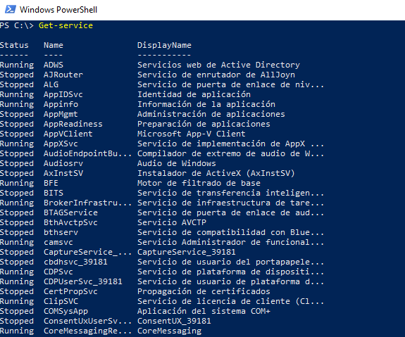
Figura 1. Ejecución del Cmdlet Get-service.
El CmdLet Get-service acepta los siguientes parámetros con sus respectivos alias:
- Name {ServiceName}
- ComputerName {Cn}
- DependentServices {DS}
- RequiredServices {SDO, ServicesDependedOn}
- DisplayName {}
- Include {}
- Exclude {}
- InputObject {}
- Verbose {vb}
- Debug {db}
- ErrorAction {ea}
- WarningAction {wa}
- InformationAction {infa}
- ErrorVariable {ev}
- WarningVariable {wv}
- InformationVariable {iv}
- OutVariable {ov}
- OutBuffer {ob}
- PipelineVariable {pv}
Como ejemplo práctico de uso del comando, si se desean ver los servicios que dependen de otros, la construcción del comando es la siguiente:
PS C:\> Get-Service | select Name,ServicesDependedOn
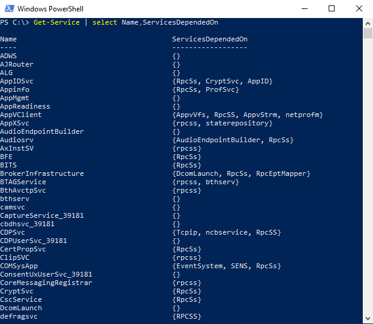
Figura 2. Listar las dependencias de los servicios
Otra forma de acceder a información de los servicios es con WMI
PS C:\> Get-WmiObject -Class Win32_Service
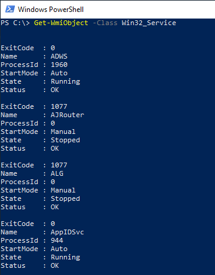
Figura 3. Salida con la información de los servicios del sistema.
Como ejemplo, si se quiere consultar los servicios que están en ejecución 'Running', el comando es el siguiente:
PS C:\> Get-WmiObject -Class Win32_Service | Where-Object State -EQ 'Running'
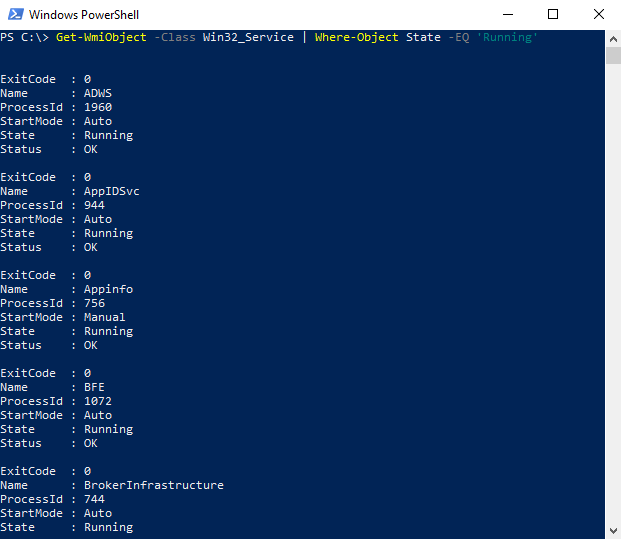
Figura 4. Consulta de los servicios en ejecución.
4. Bloquear puertos NetBIOS y SMB
NetBios (Network Basic Input Output System) es un protocolo que permite que los equipos de una red se comuniquen entre sí y compartan impresoras y archivos. El problema radica en que Windows habilita NetBios automáticamente para todos y cada uno de los adaptadores de red que se tengan en el equipo (incluido el adaptador que permite acceder a internet). Por lo que tener habilitado NetBIOS sin tomar precauciones es un enorme riesgo de seguridad.
Para evitar el peligro, se pueden hacer tres cosas:
- Deshabilitar NetBIOS.
- Dejar habilitado NetBIOS y evitar las comunicaciones por sus puertos con Internet a través del firewall.
- Deshabilitar NetBIOS y evitar las comunicaciones por sus puertos con Internet a través del firewall.
Por otro lado, la razón de bloquear el puerto SMB se debe a que es poco probable que cualquier comunicación SMB procedente de Internet o destinada a Internet sea legítima. Uno de los usos principales de SMB puede ser para un servidor o servicio basado en la nube, como Azure Files. Para este caso, habría que crear restricciones basadas en direcciones IP en el firewall perimetral para permitir solo esos puntos de conexión específicos.

El uso de NetBIOS para el transporte SMB terminó en Windows Vista, Windows Server 2008 y en todos los sistemas operativos de Microsoft posteriores cuando Microsoft introdujo SMB 2.02. Fuente.
A continuación, se describe cómo deshabilitar el uso de los puertos 139 (NetBIOS) y 445 (SMB), para ello, hay que acceder a la ventana de Ejecutar mediante la combinación de teclas Windows + R y a continuación, hay que escribir en la caja de texto regedit:
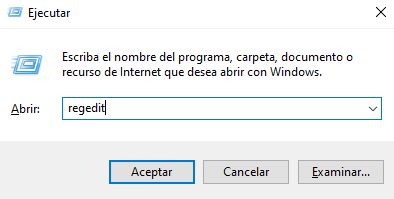
Figura 5. Acceso al regedit.
Con esto, se accede al Editor de Registro del equipo.
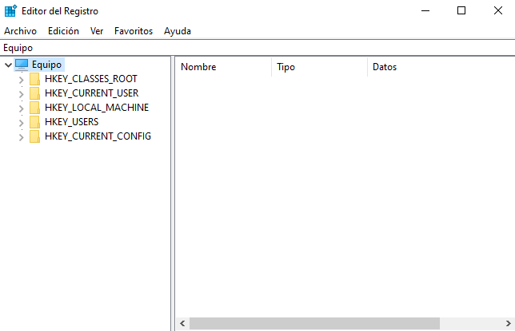
Figura 6. Regedit.
Una vez dentro, hay que buscar la siguiente ruta:
HKEY_LOCAL_MACHINE\SYSTEM\CurrentControlSet\Services\NetBT\Parameters
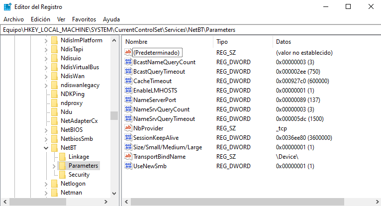
Figura 7. Acceso a Services\NetBT\Parameters.
A continuación, hay que editar la cadena con nombre TransportBindName a TransportBindName_
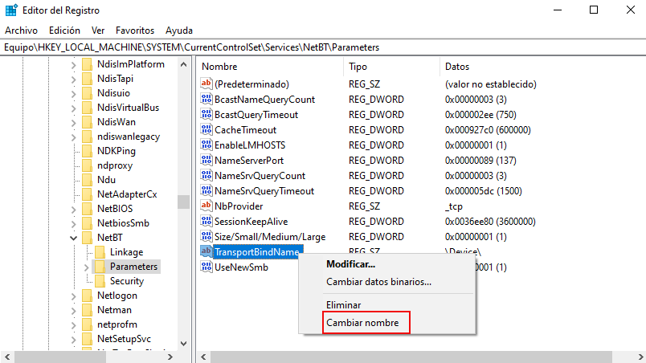
Figura 8. Modificación de la entrada TransportBindName.
Con este cambio de nombre lo que se consigue es mantener la entrada en el Registro de Windows pero ya no es una instrucción reconocida.
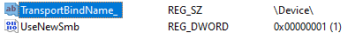
Una vez cambiado este parámetro, hay reiniciar el equipo para que se consoliden los cambios. Una vez se inicia sesión, hay que deshabilitar el servicio, para ello, hay que acceder a siguiente ruta para detener el servicio.
Panel de control > Herramientas Administrativas > Servicios > Aplicación auxiliar de NetBIOS sobre TCP/IP.
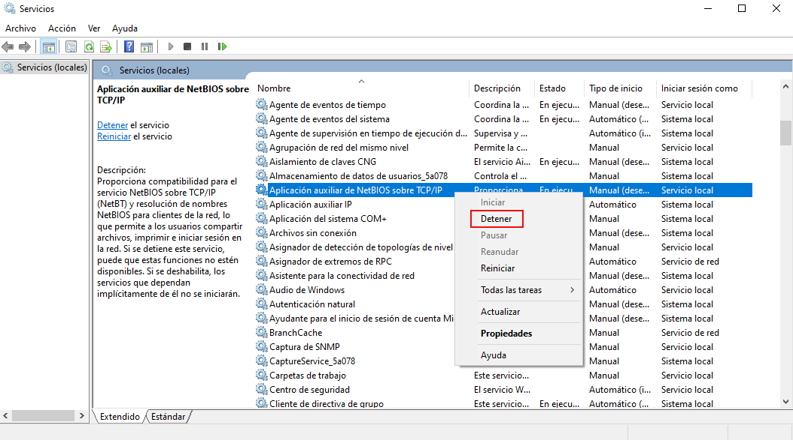
Figura 9. Detener el servicio Aplicación auxiliar de NetBIOS sobre TCP/IP.
Para que esta configuración sea permanente hay que ir a las propiedades del servicio y seleccionar "Deshabilitado" en la opción "Tipo de inicio" y aplicar los cambios.
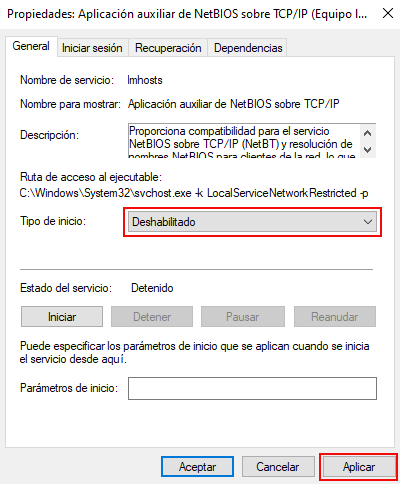
Figura 10. Deshabilitar el servicio Aplicación auxiliar de NetBIOS sobre TCP/IP.
5. Desactivar puerto 5357
El puerto 5357 de descubrimiento de red es vulnerable a problemas de fuga de información, lo que le permite acceder de forma remota por autores maliciosos.
Para deshabilitar el puerto, hay que acceder a la siguiente ruta:
Panel de control -> Redes e Internet-> Centro de redes y recursos compartidos-> Cambiar configuración de uso compartido avanzado y se desactiva la detección de redes. Para finalizar, hay que pulsar 'Guardar cambios'.
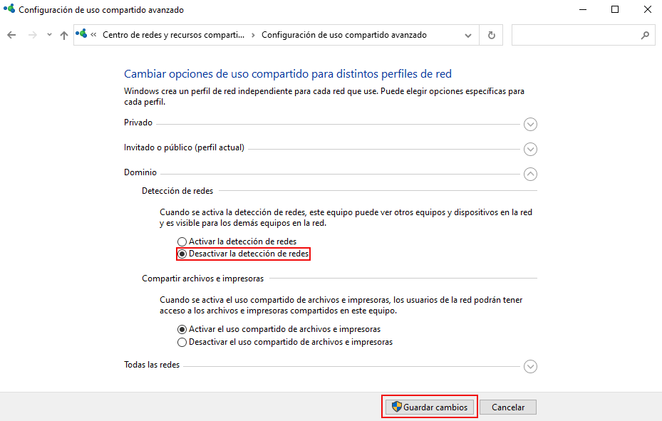
Figura 11. Desactivar la detección de redes en el Dominio.
6. Cambiar puerto RDP
Actualmente, es frecuente necesitar conectarse a la oficina para teletrabajar y terminar informes, ficheros de código, etcétera, pendientes. Tan solo hay que escribir en la terminal mstsc.exe y añadir la IP pública de la oficina para acceder al equipo de la empresa y con las credenciales seguras, se inicia sesión para comenzar a trabajar.
Los servicios de Escritorio Remoto han sido desarrollados para realizar muy bien esta misión, pero no están exentos de problemas y efectos colaterales que hay que conocer.
A fecha de escribir este apartado (23/12/2022), existen aproximadamente 25 vulnerabilidades conocidas sobre esta aplicación. La última es la conocida como BlueKeep(CVE-2019-0708). Tan solo ejecutando un pequeño programa en Python el atacante puede acceder a un equipo sin actualizar y tener una línea de comandos (SHELL) a su disposición.
Como ejemplo práctico, decir que atacantes han utilizado alguna de estas vulnerabilidades para entrar en los sistemas del cliente, ejecutar un Cryptolocker (software malicioso que cifra todos los archivos y solicita un rescate). Sin la contraseña de descifrado, NO se podrá recuperar los datos. Como consecuencia, el impacto en una empresa puede ser muy alto (tiendas que no pueden vender sus productos, pérdida de datos de contabilidad y facturación o fuga de información critica de la empresa).
Para comprobar la criticidad, si se escribe en Google ‘2019-cve-0708 exploit github‘, saldrán cientos de artículos y enlaces al código fuente de muchas herramientas que aprovechan este fallo de seguridad.
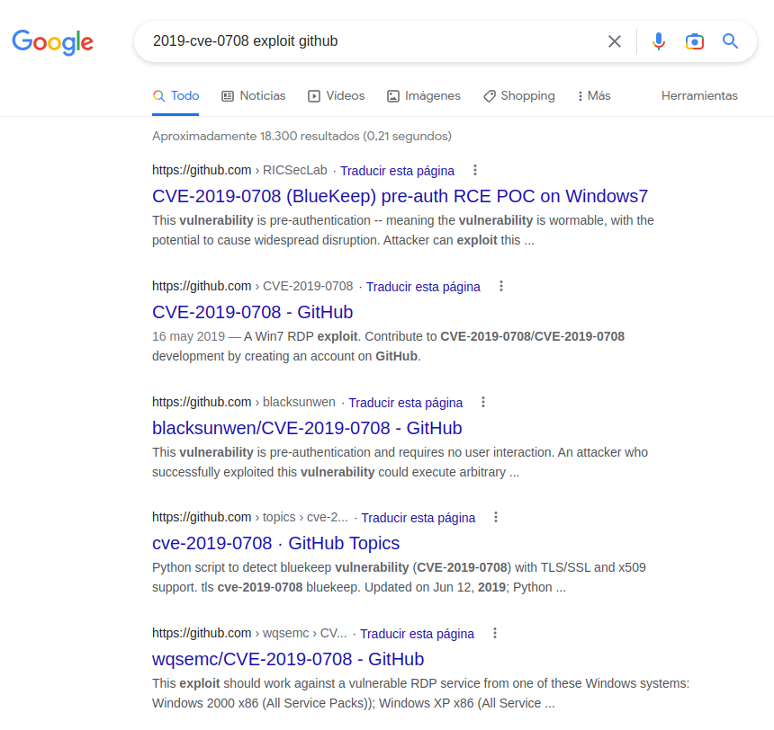
Para mitigar esta vulnerabilidad, en este caso no se va a bloquear el puerto, simplemente se va a cambiarlo a otro para evitar su enumeración por parte de un atacante.
Si se hace un escaneo de puertos (nmap) sobre un equipo concreto, ejemplo: equipo Windows 10 Enterprise con ip 192.168.191.55, se puede observar que el puerto 3389/tcp está abierto (WBT - Windows Based Terminal).
jc@jc-Latitude-E6430:~$ nmap -T4 -F -Pn 192.168.191.55
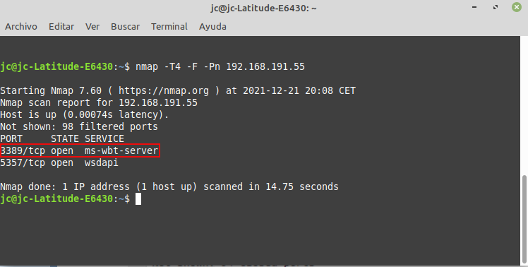
Figura 12. Escaneo con nmap sobre un equipo Windows 10 cliente del dominio ciber.local.
A continuación, se va a reconfigurar el número de puerto, para ello, hay que acceder al regedit para acceder a la ruta siguiente y modificar la entrada PortNumber.
HKEY_LOCAL_MACHINE\System\CurrentControlSet\Control\Terminal Server\WinStations\RDP-Tcp
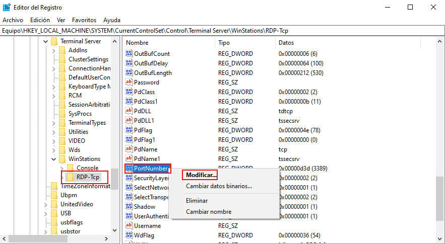
Figura 13. Modificar entrada en el registro.
Como ejemplo, se le establece una nueva numeración de puerto en concreto, el 5151. Para consolidar el cambio hay que reiniciar el equipo.
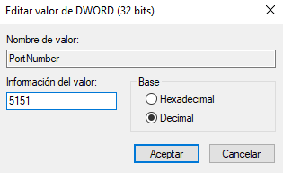
Figura 14. Nueva numeración del puerto.
A partir de este momento, si alguien quiere conectarse por RDP al equipo deberá especificar el puerto que se ha definido para poder acceder.
Si se realiza de nuevo un escaneo de puertos en el equipo, el resultado es el que se puede observar en la imagen inferior donde ya no se encuentra el puerto 3389/tcp dado que se ha renombrado a uno no conocido (5151).
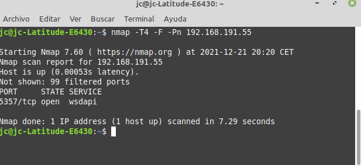
Figura 15. Escaneo con nmap sobre un equipo Windows 10 cliente del dominio ciber.local.
7. Referencias
Obra publicada con Licencia Creative Commons Reconocimiento No comercial Compartir igual 4.0